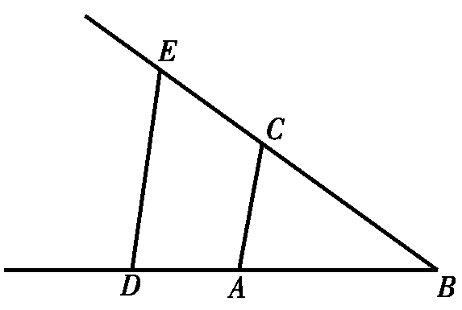
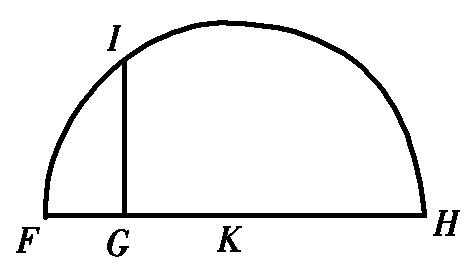

勒内·笛卡儿（René Descartes）生于一个对法国文化做出过重要贡献的杰出家族．他的父亲若阿基姆（Joachim）出生在有长远历史的医生世家，是布列塔尼省地方议会的议员．他的母亲让那·布罗沙尔（Jeanne neé Brochard）来自普瓦图地区拥有地产的富有家庭．他们在1589年结婚；当勒内1596年出生时，他们已经有了一个儿子皮埃尔（Pierre）和一个女儿让娜（Jeanne）．他们给第三个孩子起了姥爷的名字，他刚在当年去世．
笛卡儿对母亲可谓一无所知．她在他出生后13个月就告别了人世．他父亲把他交给让娜·塞恩（Jeanne Sain）夫人照料，于是她便成了笛卡儿的代理母亲，直到笛卡儿的父亲于1600年再婚．
如果说让娜·塞恩担当了笛卡儿母亲的角色，那么拉弗里舍镇耶稣会学校校长艾蒂安·沙莱（Etienne Charlet）神父就像是他的父亲．笛卡儿于1606年进入拉弗里舍镇的这所学校读书，一待就是8年．该校是他入学两年前才开办的．
跟法国市政府管理的学校显著不同，该校明确是按人本主义模式办学的；像拉弗里舍这样的天主教学校，在继续全面严格地讲授传统的天主教的基本思想，以及古代经典著作．跟大多数法国学校一样，拉弗里舍也是联系中学和大学的桥梁．在拉弗里舍，第一年开设预备班，之后的三年学习语法（拉丁语和希腊语），第五年开修辞学课程．虽然耶稣会神父要求他们的学生刻苦完成学业，但他们总是给人特别亲切的感觉．因笛卡儿体弱，拉弗里舍的神父常常允许他整个上午待在床上．
像拉弗里舍这样的耶稣会学校的许多学生，在校学习五年后会进入一所大学就读，以获得如下三个主要专业之一的学位：法学、医学和神学．实际上，很多非宗教的大学拒绝接受在耶稣会学校学习超过五年的学生，担心他们被灌输了太多相对是新的修道团的偏激教义．笛卡儿不属于这类学生．他很高兴地知道父亲希望他在拉弗里舍再多待三年．
在四年学习（预备班之后的）的第一阶段，笛卡儿开始研读形而上学、伦理学、自然哲学和辩证法．自然哲学的课程包括学习欧几里得、阿基米德和丢番图的著作，以及当代的数学．笛卡儿可能在拉弗里舍已跟一些人有私人接触，这和他获得的数学基础知识同样有价值．后来跟笛卡儿通信的马兰·梅森（Marin Mersenne）也是拉弗里舍耶稣会学校的学生．1620年代到1640年代，梅森成为跟所有重要人物通信的法国科学活动的中心．从他发出的信件超过了10000页．
1614年，笛卡儿离开拉弗里舍的学校进入附近的波瓦第尔大学学习法律．两年后他获得了法律学位．然而，他对法律似乎没什么兴趣．没有任何记录说明他从事过他父亲期望的法律实践活动．他在波瓦第尔的真正兴趣是医学，并逐渐形成了对解剖标本的强烈兴趣．
在法国的一个不大的区域生活了生命中的头二十年，笛卡儿必定渴望去瞧瞧欧洲的其他部分．他在拥有了法律学位后，加入了拿骚的莫里斯王子（Prince Maurice）的军队，做了一名绅士军官．在荷兰待了两年半后，笛卡儿离开莫里斯王子的部队，参加了巴伐利亚的马克西米利安（Maximilian）的军队．不久，笛卡儿到法兰克福游历，见证了费迪南德二世加冕为神圣罗马皇帝的准备活动．
笛卡儿的军旅生活一直延续到他年届三十．在1620年代的前半段，他走遍了欧洲，此时正值三十年战争达到高潮的时期．他的通信表明，他在这些年访问过巴伐利亚、波希米亚、德国、意大利和匈牙利，还有荷兰和法国．虽然这些年他在不停地走动，笛卡儿还是挤出时间为他在形而上学、认识论和自然哲学方面的工作打下了基础．1618年，在为奥伦治的莫里斯服务期间，笛卡儿遇到了比他年长几岁的荷兰人伊萨克·皮克曼（Isaac Beeckman）——皮克曼跟笛卡儿一样对哲学和数学感兴趣．
皮克曼遂成为笛卡儿的另一位父亲般的人物，而笛卡儿则成为向皮克曼学习智慧的学徒．最重要的是，皮克曼还成了笛卡儿的心腹之交．在1619年23岁生日前不久，笛卡儿在一封给皮克曼的信中勾画了一种新数学的架构：
上述文字实际是一份草稿，它后来变成为笛卡儿的《指导思维的法则》中的第四条法则：
事实上，笛卡儿差不多20年后才有时间来发展他的数学．笛卡儿在结束军营生活后的1625至1628年居住在巴黎．他发现自己身处这样一个学者圈内，其中的人士跟他自己一样拒绝接受大部分在17世纪仍占优势地位的正统的亚里士多德学说．他和他的圈内人士时不时地论证着哥白尼的日心说天文学的价值和优点．然而，他们必须以假设性的词语来描述他们的讨论．1624年，巴黎的索邦神学院曾发布一道命令，扬言凡讲授违反已批准的古典学者观点的人要被处死．
虽然他一辈子都是热情的天主教徒，笛卡儿还是发现巴黎的学术空气充斥着令人生畏的、过强的宗教影响；为了寻求更自由的学术空气，他于1628年来到信奉新教的荷兰．一次涉及某女士名誉的决斗也可能加速了他作出离开巴黎的决定．对这位女士的情况我们一无所知，只知道笛卡儿把她的美比作真理之美！他必定是急匆匆地离开巴黎的．笛卡儿的信件显示，他走时除了圣经和托马斯·阿奎那（St.Thomas Aquinas）的《神学大全》外没带任何东西．
笛卡儿落脚在阿姆斯特丹，并很快使自己成了当地学术圈里的杰出人物．在跨越1634—1635年的冬天，笛卡儿成为巴拉丁选侯夫人和波希米亚女王伊丽莎白·斯图亚特（Elizabeth Stuart）家的常客．她乃是波希米亚腓特烈五世（Frederick V）的寡妻——腓特烈五世的军队在1630年的白山战役中被彻底击溃，穷困潦倒的他被迫流亡到荷兰．1632年腓特烈去世，他的寡妻留在荷兰，由她的兄弟、英格兰国王查理一世（King Charles Ⅰ）提供生活费用．笛卡儿和这位有遗产的寡妇伊丽莎白女王，以及后来跟她的女儿、波希米亚的伊丽莎白公主都有紧密的、知识方面的联系．
在阿姆斯特丹时期，笛卡儿跟奥伦治王子腓特烈·亨利（Friderick Henry）的秘书康斯坦丁·惠更斯（Constatijn Huygens）的关系变得很亲善．惠更斯出身外交官的家庭，后成为笛卡儿的热情支持者．但惠更斯家族最大的名声来自康斯坦丁的大儿子克里斯蒂安（Christiaan，1629—1695），他是牛顿同时代的人，英国哲学家约翰·洛克（John Locke）将牛顿描述成“惠更斯式”的人物．笛卡儿积极主动地教育这位年轻的克里斯蒂安·惠更斯，而后者则发展了笛卡儿的漩涡理论．
在1630年代中期，笛卡儿跟一位他所居住的房子里的女仆埃莱娜（Helene）有一段罗曼史，也是他一辈子唯一一次有意义的男女之情．1635年7月，她生下了笛卡儿的女儿，他们给孩子起名叫弗朗辛（Francine）．这孩子受洗礼为新教徒，在短短的生命期间只跟她父亲偶有接触——1640年刚过5岁生日，她就命丧肆虐全荷兰的热病．她的死强烈地震撼了笛卡儿．正是她的夭折才唤醒笛卡儿认识到她对自己意味着什么．像通常那样，孩子死后他再没有跟埃莱娜接触．
荷兰也是笛卡儿如下最伟大著作的诞生地：《方法论》，《形而上学的沉思》，《哲学原理》和《几何》——后者将在这里展现给大家．
我们很容易从他对两种十分基本的运算——确定乘积和确定平方根——的阐释，看到笛卡儿的数学方法的威力．回忆一下，欧几里得和他的可下溯至16世纪的希腊后继者的方法，算术命题都是用诸如线段长度这样的几何图形来陈述的，这并不是因为线段长度提供了表示数的好方法，而是因为它就是数！于是，确定两个抽象的值X和Y的乘积，意味着画一个两条边的长度为X和Y的矩形，将它们的乘积理解为该矩形的面积！类似地，古人把抽象的值X视为一个两维图形，通过找出等面积的正方形来求X的平方根．该正方形的边即是X的平方根．
无理数带来的危机迫使希腊人诉诸这样的几何解释．笛卡儿则不受这些几何限制．
所以，例如一个量x的立方，它被记为x3，并不是因为它代表几何的三维立方体，而是因为它代表具有三个关系式的一连串比例：
1：x＝x：x2＝x2：x3.
代替针对每一个所考虑的对象进行几何作图，笛卡儿假定所有给定的对象都存在，并指出如何画出所寻找的作为直线段的那个值．
下面是他在《几何》的一开始讲述的如何确定两个量乘积的方法．他假设单位（即，数值1）由线段AB给定，需要相乘的值由线段BD（跟AB共线）和BC表示．他连接点A和点C，然后过D画直线平行于AC，交BC于E．

这样做的过程中，笛卡儿创建了两个相似的三角形ABC和DBE．于是，它们的边成比例：
BE：BC＝BD：BA．
但因BA=1，他得到
BE：BC=BD
或
BE=BC×BD，
这就是所寻找的解．
求平方根也一样简单．他令线段GH表示将要开平方根的量，并将其从G延长至F，使FG等于单位．之后，笛卡儿平分线段FH，分点为K；再以K为中心，KH（＝KF）为半径画半圆．他在点G作FH的垂线，交半圆于点I．

这时，笛卡儿实际上构作了三个相似的直角三角形IGF，HGI和HIF．（角IGF，HGI和HIF都是直角．）因IGF和HGI相似，我们有
GH：GI=GI：FG．
据假定，我们有
FG=1．
因此
GH=GI×GI，
这说明GI是GH的平方根．
笛卡儿在荷兰一直居住到1648年，那年瑞典女王克里斯蒂娜为他在斯德哥尔摩的宫廷提供了一个职位，任务是为学者们建立一所科学院并亲授女王伦理学和神学．笛卡儿接受此职后，克里斯蒂娜派了一艘战舰接他到瑞典．笛卡儿从未受到过如此高贵的待遇，他也许期待着在瑞典宫廷受到同样的款待．可能他周围的环境会极具皇家气派，笛卡儿没有想到要去询问一下他所期待的住房情况．
由于身体状况一直较差，他常常一上午都待在床上．让他十分苦恼的是，他知道了这并非是瑞典宫廷的生活方式．女王克里斯蒂娜坚持：无论天气好坏，她的课都要在清晨5点开始．这就要求笛卡儿清晨4：30离开住所，勇敢地去面对经常是寒风凛冽的北方天气．1649—1650年的冬季特别无情，不久笛卡儿得了肺炎．对克里斯蒂娜的医生可能开出的任何药方，笛卡儿喜欢自作主张，他试图用酒和烟草的混合物使自己呕吐排痰，以治愈疾病．不过病情很快恶化，他陷入了谵妄状态，两天后的1650年2月11日，笛卡儿与世长辞．